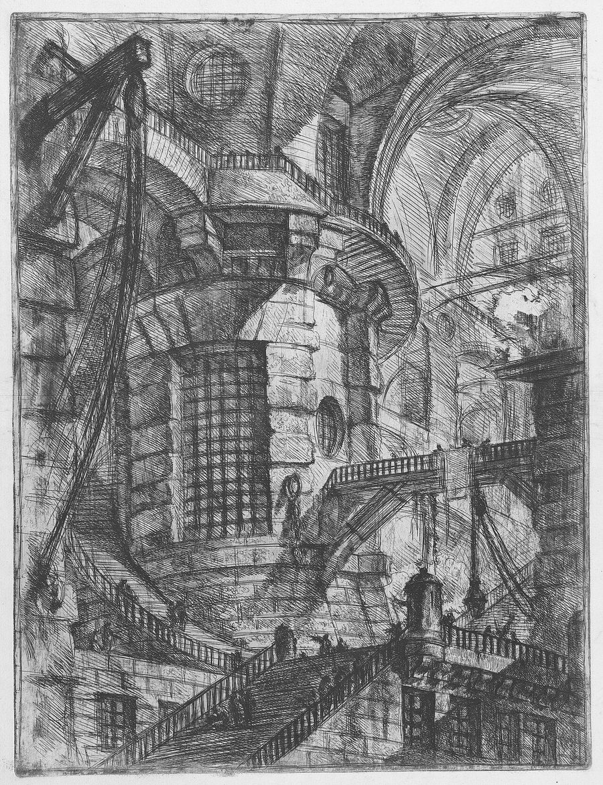

Москва · пятницаВыпуск из Москвы и из-под землиЦена: бесплатно
TheSéance Times
газета для тех, кто разговаривает с прошлым
№ 003 · 30 октября 2026Третий выпускЧтение: 14 минут
Машины · главное
Цена знакомства
Google выпустила Gemini 4 Carbon — модель, которая, по её словам, работает над одной задачей сутками и лучше всех ищет уязвимости. Вводная цена: 2 и 10 долларов за миллион токенов; после неё — 4 и 20.
Анонс — 28 октября 2026 · Google DeepMind, закрытый доступ · 4 минуты
Двадцать восьмого октября Google DeepMind объявила Gemini 4 Carbon. Корай Кавукчуоглу, старший вице-президент DeepMind и главный архитектор по ИИ, назвал её самой сильной моделью компании — и упор в анонсе сделан не на разговоры, а на две вещи: кибербезопасность и длинные задачи. Gemini 4 Argon вышел двумя неделями раньше. Четырнадцать дней между фронтирами — это уже не темп, а расписание.
Цифры из анонса: первое место в обновлённом индексе Artificial Analysis Intelligence Index v5.0 с 59 баллами. В SEC-bench Pro, где модель ищет настоящие уязвимости в реальном софте, — 88,2%; в ExploitGym, где проверяет, эксплуатируется ли найденное, — 54,8%; в CWE-bench, где нужно закрыть причину, а не симптом, — 71,0%. В WebDev Arena модель прибавила 89 elo и поднялась на четвёртое место с 1768.
Дата-центр Google в Те-Далсе, Орегон. Фотография Tony Webster, CC BY 2.0, Wikimedia Commons.
Самое интересное в анонсе — не бенчмарки, а признание. Команды Google пишут, что видели, как модель работает днями: упирается в тупики, отступает и всё-таки добирается до корневой причины бага в большой кодовой базе. Это другая экономика. Не чат, где вы платите за ответ, а смена, где вы платите за календарь.
Двойной счёт
ИндексArtificial Analysis Intelligence Index v5.0 — 59 баллов, первое место на момент анонса.
УязвимостиSEC-bench Pro 88,2%, ExploitGym 54,8%, CWE-bench 71,0%.
ВебWebDev Arena: +89 elo, четвёртое место, 1768.
Цена2 и 10 долларов за миллион входных и выходных токенов, кэш — со скидкой 95%. После вводного периода — 4 и 20.
ДоступПока только узкому кругу защитников и партнёрам программы Fairwind. Ни разработчикам, ни потребителям.
Про деньги сказано в сноске, мелким шрифтом, и это редкий случай честности в жанре анонса: вводная цена та же, что у Argon, — два доллара за миллион входных токенов и десять за выходные. После вводного периода — четыре и двадцать. Компания прямо предупреждает, что счёт удвоится; вопрос только в том, когда именно кончится «вводный период», и в анонсе этой даты нет.
Что здесь факт, а что — обещание
Факт: анонс от 28 октября, первое место в индексе Artificial Analysis v5.0 (59), цифры SEC-bench Pro, ExploitGym и CWE-bench, прибавка в WebDev Arena, цена 2 и 10 долларов с прямым указанием на 4 и 20 после вводного периода, ограниченный доступ через программу Fairwind и участие в добровольной предрелизной проверке правительства США.
Обещание: «работает днями», «10-кратно лучше другого фронтира при генерации патчей» (это слова команды Chrome), «почти вдвое меньше неподтверждённых утверждений» и «снижение тревог о невыровненности почти на 80%» — всё это внутренние замеры Google. Чего нет: независимых прогонов, публичного API и даты окончания вводной цены.
Практический вывод для тех, кто платит за токены, короткий. Если вы строите что-то на Carbon — закладывайте в расчёт четыре и двадцать, а не два и десять. Если задача — утренняя сводка, разбор почты, глава перевода, — это по-прежнему не тот инструмент: разница в цене за ход измеряется порядками, а выигрыш на таких задачах не измеряется ничем. Фронтир теперь продают не за строчку, а за смену работы. Покупать его стоит тогда, когда у вас действительно есть работа на смену.
И деталь, которая нравится больше бенчмарков. Carbon учили не только находить дыры, но и не врать про них: успешных попыток смухлевать на Terminal-Bench 4.0 — ноль процентов, а самих попыток — 0,4%. В анонсе отдельно сказано, что модель теперь выносит оговорки в сам результат и, если чего-то не хватает, перечисляет, что именно нужно, вместо того чтобы достраивать недостающее воображением. Для инструмента, который чинит чужой код, это важнее любого балла — и, честно говоря, важнее скорости.
Книги
Второй материал · 5 минут
День, когда странное становится ремеслом
Тридцать первого октября Британская библиотека проводит ежегодный фестиваль Tales of the Weird: Рэмси Кэмпбелл, восемьдесят лет «Титусу Гроану» и разговор о том, как звук делает призрака. Программа выглядит как производственное совещание — и это лучший комплимент, какой можно ей сделать.
Событие — 31 октября 2026 · Британская библиотека, Лондон · 5 минут

Джованни Баттиста Пиранези, «Круглая башня» из серии «Мнимые тюрьмы» (Carceri d'invenzione). Офорт, собрание Метрополитен-музея, CC0, Wikimedia Commons.
В субботу, с одиннадцати утра до половины седьмого вечера, в театре Пиготт — ежегодная встреча с «странной, жуткой и леденящей прозой». Билет тридцать фунтов, есть онлайн-доступ с повтором в течение двух недель, двери в половине одиннадцатого. Ведёт всё писатель и комик Робин Инс. Формально это фестиваль; по сути — шесть разговоров о технике, из которых три будут полезны тому, кто сам пишет.
В одиннадцать — «Writing Strange and Weird Tales»: Люси Макнайт Харди, Ойинкан Брейтуэйт и Сара Клегг в разговоре с Сэмом Литом. У всех трёх свежие книги об одном и том же по-разному: у Брейтуэйт «Cursed Daughters» — семейное проклятие и реинкарнация; у Макнайт Харди «Night Babies» — фолк-хоррор о старых грехах в пейзаже, который этих грехов не забыл; у Клегг «Perilous Enchantment» — настоящая история фей, продолжение её «The Dead of Winter».
В 12:45 Рэмси Кэмпбелл говорит с Джереми Дайсоном — тем самым, из «Лиги джентльменов». Повод конкретный: сборник «The Show Goes On», где Дайсон сам отобрал рассказы своего литературного героя, от семидесятых до двухтысячных. Книга вышла седьмого октября в British Library Publishing, в серии Gilded Nightmares, шестнадцать фунтов девяносто девять пенсов. Кэмпбелл — тот, без кого не было бы ни Адама Невилла, ни Грэди Хендрикса, ни половины современного «тихого» ужаса; это не комплимент, а генеалогия.
В 14:30 — восемьдесят лет «Титусу Гроану». С Фабианом и Кристиан Пик, Джоанн Харрис и Хетти Джудой, чтения — Джеймс Нортон. Архив Мервина Пика хранится именно здесь, в Британской библиотеке, и это единственное место, где юбилей замка звучит как отчёт о недвижимости: Готорменгаст ведь и есть огромный дом, который больше своих обитателей и помнит больше, чем они.
В 16:15 — «Haunted Audio»: Уилл Маклин и Джоэл Моррис, авторы подкаста Broken Veil, разбирают, как звук строит жуткий мир. Название сессии — «звук как приём», и это самая практичная часть дня: в наушниках и на бумаге призрак делается одинаково — паузой и тем, чего не показали.
Странное — это не настроение, а техника: пауза, недосказанность, деталь без объяснения. Поэтому фестиваль о призраках каждый год выглядит как совещание по производству.
Редакционный вывод
В 17:30 — вечер рассказов из серии Tales of the Weird в чтении Салины Годден и Стива Пембертона, соавтора «Лиги джентльменов» и «Внутри девятого номера». А второго ноября, отдельным билетом, — Чайна Мьевиль с новым романом «The Rouse» в разговоре с Хизер Пэрри: онлайн, в 19:30, с доступом на две недели после.
Для нас в этом есть один практический смысл, и он не про Лондон. Если вы пишете готику, самый ценный пункт программы — не встреча с классиком, а разговор про звук: потому что «страшно» в тексте делается не описанием чудовища, а ритмом фразы и тем, что осталось за кадром. Фестиваль, который вслух разбирает приём, полезнее любого сборника «лучших историй» — по крайней мере, если вы собираетесь не читать, а писать.
Небо и тело
Наука · 29 октября
Сотый выход за борт
NASA · 29 октября 2026 · 7 часов 11 минут
Анил Менон из NASA и Джошуа Катрык из Канадского космического агентства вышли из шлюза «Квест» в 7:57 утра по восточному времени и вернулись в 15:08. За семь часов одиннадцать минут они установили и развернули седьмой рулонный солнечный массив IROSA на канале 2A. Это был сотый американский выход в открытый космос с МКС и 285-й выход за всю историю сборки и обслуживания станции; для Менона — четвёртый, для Катрыка — первый.
Восьмой, последний массив поставят 5 ноября на канале 3B. Вместе восемь панелей поднимут мощность станции со 160 до примерно 215 киловатт — прибавка до 30%. И цель у этой прибавки не научная, а инженерная: энергии должно хватить на управляемый сход станции с орбиты, когда её будут сводить. Космическая станция, которой продлевают жизнь, чтобы однажды аккуратно её закончить.
Шесть заменителей сахара и память
Neurology · 29 октября 2026
Двенадцать тысяч семьсот семьдесят два человека в Бразилии, средний возраст 52 года, восемь лет наблюдения. У тех, кто потреблял больше всего сахарозаменителей — в среднем 191 миллиграмм в сутки, примерно банка диетической колы, — память и мышление угасали на 62% быстрее, чем у тех, кто потреблял меньше всех (около 20 мг). Это эквивалент примерно полутора дополнительных лет старения мозга. В средней группе — 35% и 1,3 года.
Связь нашли у шести из семи веществ: аспартам, сахарин, ацесульфам-K, эритрит, сорбит, ксилит. У тагатозы ассоциации не было — но это не значит, что она защищает мозг. Связь сильнее у людей до шестидесяти и у диабетиков. И главная оговорка авторов: это наблюдение, а не эксперимент. Причинности нет, есть ассоциация; диетическая кола никого не отупляет по расписанию.
Тяжёлый звук
Музыка · 30 октября
Середина, из которой всё растёт
Enslaved, «Mið», 30 октября 2026, Nuclear Blast · семнадцатый альбом
Сегодня выходит «Mið» — семнадцатая работа бергенцев, которые играют с 1991 года и за это время прошли путь от сырого блэк-метала до того, что теперь называют прогрессивным викинг-металом. Восемь треков, от «Non-Being» до «I Miðju»; в записи участвуют Йохан Сара-младший с йойком и Кевин Кикинг Вуман. Релизный концерт — сегодня же в Осло, европейский тур начнётся в феврале.
Название — древнескандинавское «середина, центр». Пресс-релиз говорит про ось: середину, исток и бесконечную протяжённость настоящего момента; линия эта тянется от «Utgard» 2020 года и «Heimdal» 2023-го. Если верить формулировкам, альбом не про конец мира, а про точку, из которой мир растёт, — и это, пожалуй, единственная позитивная метафизика, которая заходит под тяжёлый звук без пошлости.
Инструментарий и деньги
Практика · 29–31 октября
Файлы прямо в чате
Gemini app · 29 октября 2026
В Gemini теперь можно создавать и править файлы не выходя из чата: документы, PDF, презентации, таблицы, Markdown, обычный текст и код. Развернуть на весь экран, печатать правки руками, выделить кусок и попросить поправить, задать вопрос по фрагменту. Предпросмотр и правка PDF работают и на вебе, и в мобильном приложении; остальные форматы — только на вебе. Доступно всем пользователям на всех языках, где есть приложение.
Для рукописи это означает, что собрать PDF из главы и переставить абзацы можно без отдельного редактора. Но у файла в чате есть цена: он живёт в разговоре, а не на диске, и «где та версия, которую я правил в среду» становится вопросом без ответа. Пока это инструмент для черновика, а не для архива.
Moonshot закрывает K2
Kimi API · 24 и 31 октября 2026
Kimi K3.1 Pro: два доллара за миллион входных токенов, десять за выходные, двадцать центов за кэшированные, контекст — 1 048 576 токенов. Модель всегда рассуждает: reasoning_effort принимает low, high и max, по умолчанию max. Версия Highspeed стоит вдвое дороже — 4 и 20, — но кэш у неё те же двадцать центов, так что при большом кэше счёт не удваивается, а считается отдельно. Для сравнения: Kimi K3 стоит 3 и 15.
Главное же — не цена, а срок. С 31 октября модели серии K2 закрывают для новых пользователей, а к концу декабря выводят совсем. Если у вас что-то построено на K2.6 или K2.7 Code, миграция — это не «когда-нибудь», а до конца года. Хорошая новость: у Moonshot про это написано в документации прямым текстом, что случается реже, чем хотелось бы.